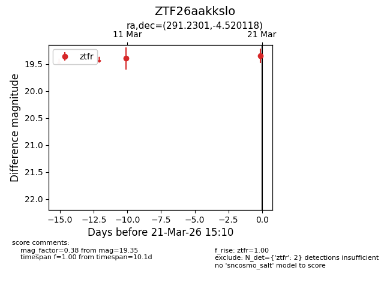
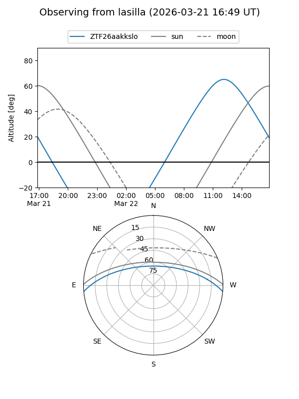
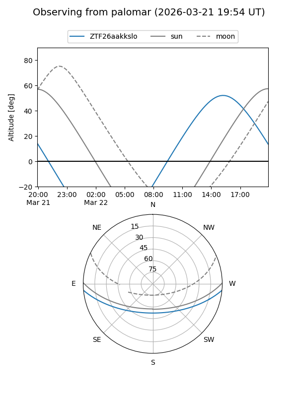

ZTF26aakkslo
Target ZTF26aakkslo at 2026-03-21 15:12
Aliases and brokers:
FINK: link
Lasair: link
ALeRCE: link
alt names
ZTF26aakkslo (ztf,fink_ztf)
Coordinates:
equatorial (ra, dec) = 291.2301,-4.52012
equatorial (HMS+DMS) = 19:24:55.23,-04:31:12.42
galactic (l, b) = (32.7016,-9.50268)
Flags:
Photometry:
last ztfr=19.35
2 ztfr detections
Lightcurve

Visibility


Additional plots